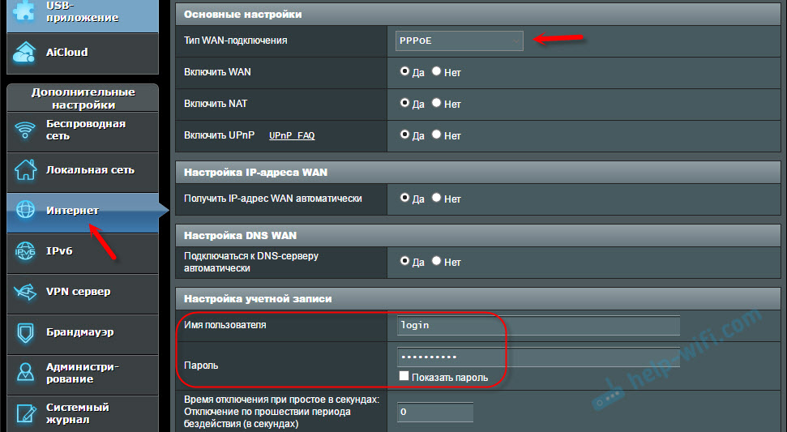
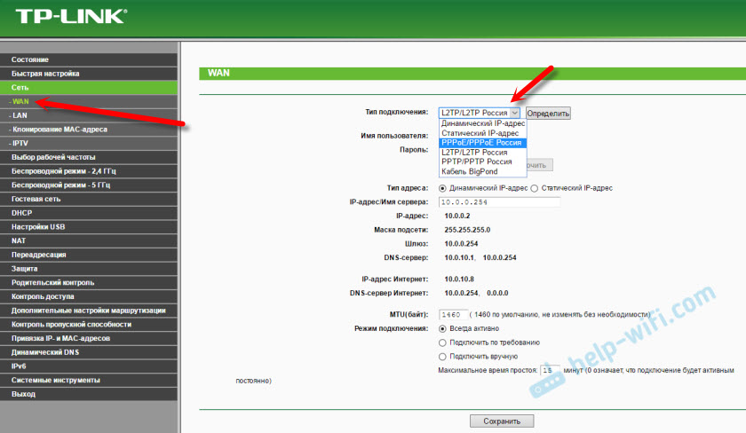
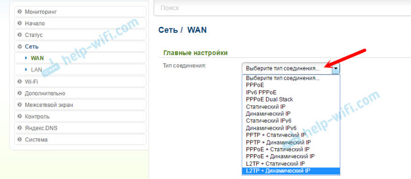
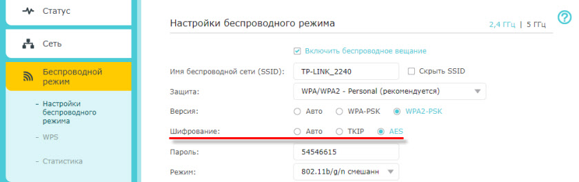
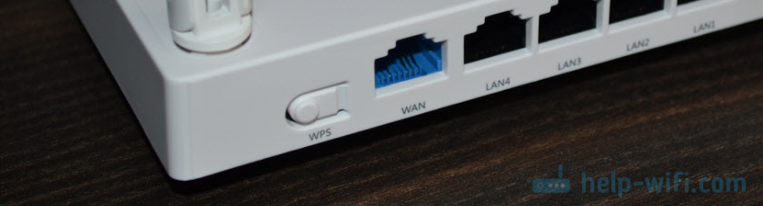
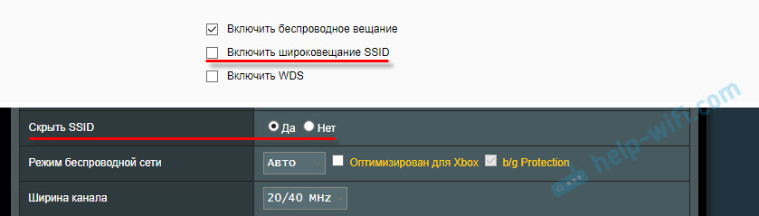

Беспроводные сети WI-FI и их оборудования
Первый вид — это несколько устаревшая разновидность устройств, которые принимают сигнал по телефонному кабелю с разъёмом RJ11. Их называют ADSL-роутерами. Стоит отметить, что они способны принимать данные со скоростью не больше 1 мегабит в секунду, а раздавать — всего до 700 килобит в секунду. Безусловно, такие параметры мало кого устроят сегодня, ведь подобная скорость не позволяет скачивать объёмные файлы. Но раньше такая технология была очень распространена, поскольку не требовала проводки нового кабеля в дом либо квартиру. Невысокая скорость подключения позволила ADSL-роутерам завоевать популярность. Но позже на смену им пришли более прогрессивные технологии

Второй вид — это самая популярная в наши дни технология Ethernet. Такие устройства имеют порт WAN, по которому подключается кабель с разъёмом RJ45. Безусловно, такие роутеры бывают нескольких разновидностей. Они могут различаться по типу применяемого протокола, поддерживаемому набору стандартов IEEE 802.11. На рынке представлены модели самых разных производителей, начиная от бюджетных и заканчивая товарами с топовыми характеристиками.

Третий вид — 3G и 4G-девайсы. Они используют пакетную передачу данных. При этом принцип действия у таких роутеров очень похож. Они различаются только скоростью работы, кодировкой данных и рабочей частотой. Следует отметить, что во многом качество работы такого роутера зависит от покрытия, предоставляемого оператором. При этом роутеры, которые принимают радиосигнал, очень удобны для людей, которые часто работают в разных местах.

Четвёртый вид — маршрутизаторы, которые подключаются к пассивным оптическим сетям PON. В качестве WAN-порта используется оптический пигтейл SC. Такие устройства появились относительно недавно. Это означает, что маршрутизаторы подключаются к оптическому кабелю, заведённому в жилище либо офис. Такие виды гаджетов не имеют промежуточных узлов. При этом главных их недостаток — слабая защита от перехвата данных.

Пятый вид представляет собой универсальные гаджеты. Суть заключается в том, что одно устройство использует сразу несколько технологий. Самые популярные комбинации — ADSL+Ethernet либо Ethernet+3G. Они имеют дополнительные порты и встроенные модули связи

Как настроить Wi-Fi роутер?
Для того, чтобы пользоваться интернетом через маршрутизатор, нужно, во-первых настроить подключение к интернету, во-вторых настроить Wi-Fi сеть.
В большинстве случаев этого достаточно. Так же нужно менять пароль, который защищает веб-интерфейс роутера. Есть еще настройки IPTV, USB-накопителей, родительского контроля и т. д., но они нужные далеко не всем.
Каждый интернет-провайдер использует определенный тип подключения. Динамический IP (DHCP), Статический IP, PPPoE, L2TP, PPTP. Этот тип подключения нужно указать в панели управления маршрутизатором, и задать определенные параметры, которые выдает интернет-провайдер.
Важно! В Вы должны точно знать, какой тип подключения у вашего провайдера. Так же все необходимые данные для подключения (имя пользователя, пароль), если они необходимы. Как правило, эта информация указана в договоре, которые вы получили при подключении к интернету.
Некоторые провайдеры делают привязку по MAC-адресу. Это так же желательно уточнить.
Если ваш провайдер использует подключение по "Динамический IP" (DHCP), то интернет должен работать сразу после подключения, так как на маршрутизаторах этот тип подключения выставлен по умолчанию.
Если интернет через роутер уже работает (и вы не запускали никаких подключений на компьютере), то можете пропускать этот раздел и сразу переходить к настройке Wi-Fi.
Когда тип подключения PPPoE, L2TP, PPTP, или Статический IP (что очень редко), то нужно задать необходимые параметры. Обычно, это логин и пароль, которые выдал вам провайдер. В панели управления, раздел с этими настройками чаще всего называется: "WAN", "Internet", "Интернет".
Настройка PPPoE подключения на роутере ASUS

Настройка PPPoE подключения на роутере TP-Link

Настройка PPPoE подключения на роутере D-Link

Типы защиты сети
WEP (Wired Equivalent Privacy) – устаревший и небезопасный метод проверки подлинности. Это первый и не очень удачный метод защиты. Злоумышленники без проблем получают доступ к беспроводным сетям, которые защищены с помощью WEP. Не нужно устанавливать этот режим в настройках своего роутера, хоть он там и присутствует (не всегда).
WPA (Wi-Fi Protected Access) – надежный и современный тип безопасности. Максимальная совместимость со всеми устройствами и операционными системами.
WPA2 – доработанная и более надежная версия WPA. Есть поддержка шифрования AES CCMP. Это актуальная версия протокола, которая все еще используется на большинстве домашних маршрутизаторов.
WPA3 – это новый стандарт, который позволяет обеспечить более высокую степень защиты от атак и обеспечить более надежное шифрование по сравнению с предыдущей версией. Так же благодаря шифрованию OWE повышается безопасность общественных открытых сетей. Был представлен в 2018 и уже активно используется практически на всех современных роутерах и клиентах. Если ваши устройства поддерживают эту версию – используйте ее.
WPA/WPA2 может быть двух видов:
WPA/WPA2 - Personal (PSK) – это обычный способ аутентификации. Когда нужно задать только пароль (ключ) и потом использовать его для подключения к Wi-Fi сети. Используется один пароль для всех устройств. Сам пароль хранится на устройствах. Где его при необходимости можно посмотреть, или сменить. Рекомендуется использовать именно этот вариант.
WPA/WPA2 - Enterprise – более сложный метод, который используется в основном для защиты беспроводных сетей в офисах и разных заведениях. Позволяет обеспечить более высокий уровень защиты. Используется только в том случае, когда для авторизации устройств установлен RADIUS-сервер (который выдает пароли).
Шифрование беспроводной сети
Есть два способа TKIP и AES
Рекомендуется использовать AES. Если у вас в сети есть старые устройства, которые не поддерживают шифрование AES (а только TKIP) и будут проблемы с их подключением к беспроводной сети, то установите "Авто". Тип шифрования TKIP не поддерживается в режиме 802.11n. В любом случае, если вы устанавливаете строго WPA2 - Personal (рекомендуется), то будет доступно только шифрование по AES.
Рекомендации, как легко улучшить защиту Wi-Fi сети и роутера от других пользователей и взлома
Так сложилось, что многие несерьезно относятся к защите своей домашней Wi-Fi сети и самого маршрутизатора. В лучшем случае Wi-Fi сеть защищена каким-то паролем, а заводской пароль маршрутизатора изменен. Но и это бывает не всегда. Очень часто пользователи оставляют Wi-Fi сеть полностью открытой. По доброте душевной, или просто лень устанавливать, а потом еще и вводить этот пароль – я не знаю. Но это очень глупо.
Установите надежный пароль Wi-Fi сети
Ваша Wi-Fi сеть должна быть защищена паролем. Хорошим паролем. Никаких "11111111", "12345678", "qwertyui" и т. д. Не поленитесь придумать надежный пароль, в котором будут заглавные буквы, цифры и специальные знаки (~ ! @ # $ % & * ).
Пример хорошего и легкого в запоминании пароля: Al1sher_am@ngeldy
Защитите настройки маршрутизатора паролем
Этот пароль никак не относится к Wi-Fi. Он используется исключительно для защиты настроек роутера. Чтобы никто кроме вас не смог зайти в веб-интерфейс роутера и сменить там какие-то настройки. Как правило, устанавливается логин и пароль (иногда только пароль). На некоторых роутерах он установлен по умолчанию. Обычно используется admin/admin. Если по умолчанию пароль не установлен, то в процессе первой настройки роутер предлагает установить его. Но это в любой момент можно сделать в панели управления.

После установки/смены пароль, его нужно будет вводить каждый раз, когда вы будете заходить в веб-интерфейс.

Отключите функцию WPS
С помощью WPS можно быстро и без ввода пароля подключать устройства к беспроводной сети. Но как показывает практика, WPS мало кто пользуется. Можно найти много материалов, где написано о разных проблемах с безопасностью функции WPS. Поэтому, для защиты роутера от взлома, эту функцию лучше отключить.

Спрячьте Wi-Fi сеть от посторонних глаз
В настройках Wi-Fi сети на маршрутизаторе есть такая функция как "Скрыть SSID" (Hide SSID), или "Отключить широковещание SSID". После ее активации устройства перестанут видеть вашу Wi-Fi сеть. А чтобы к ней подключиться, нужно будет указать не только пароль, но и имя самой сети (SSID). А это дополнительная защита. Эта настройка обычно находится в разделе с настройками беспроводной сети.

Настройте фильтрацию по MAC-адресам
MAC-адрес – уникальный адрес Wi-Fi адаптера (модуля). То есть, у каждого устройства он свой. В настройках роутера можно прописать MAC-адреса тех устройств, которые могут подключаться к вашей сети (создать белый список адресов). Если MAC-адреса устройства в списке нет – оно к сети не подключиться. Это наверное самая эффективная защита маршрутизатора. Неудобство лишь в том, что при подключении новых устройств придется заходить в настройки роутера и прописывать их MAC-адреса.